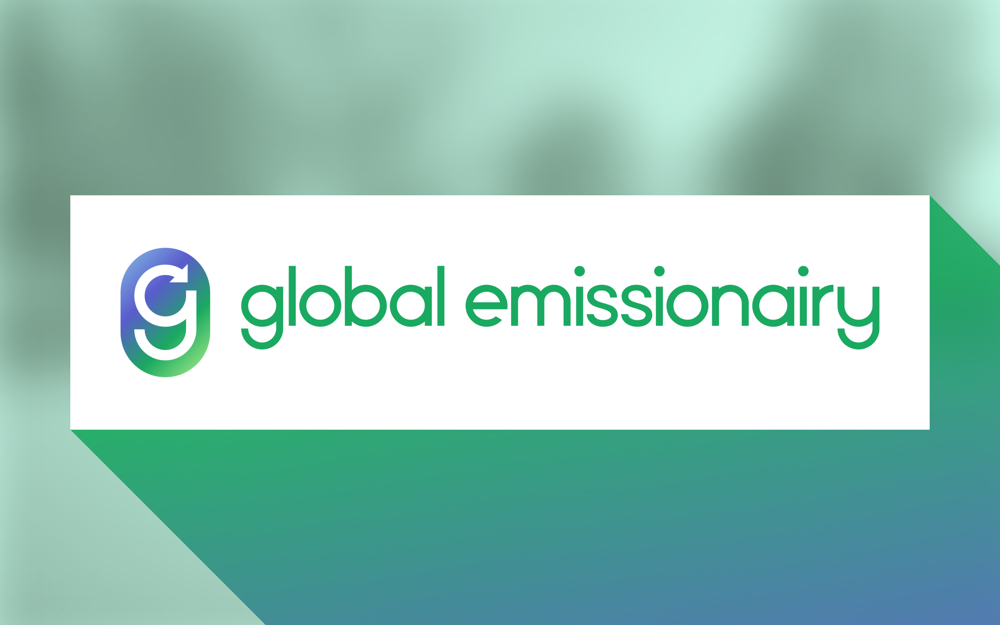
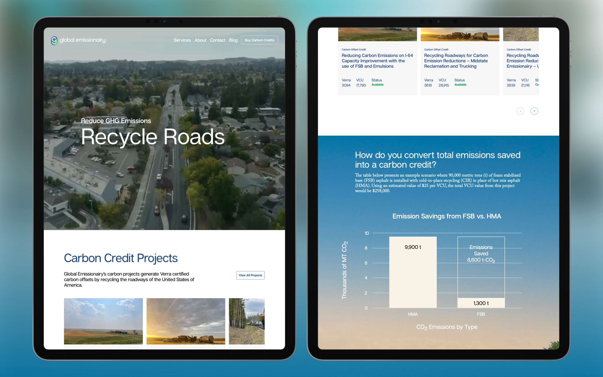
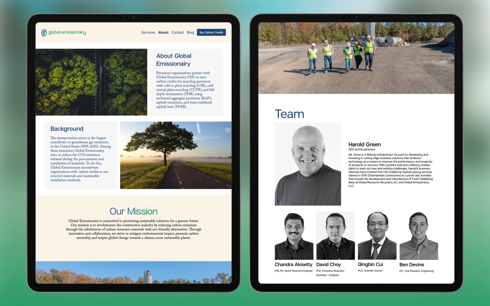
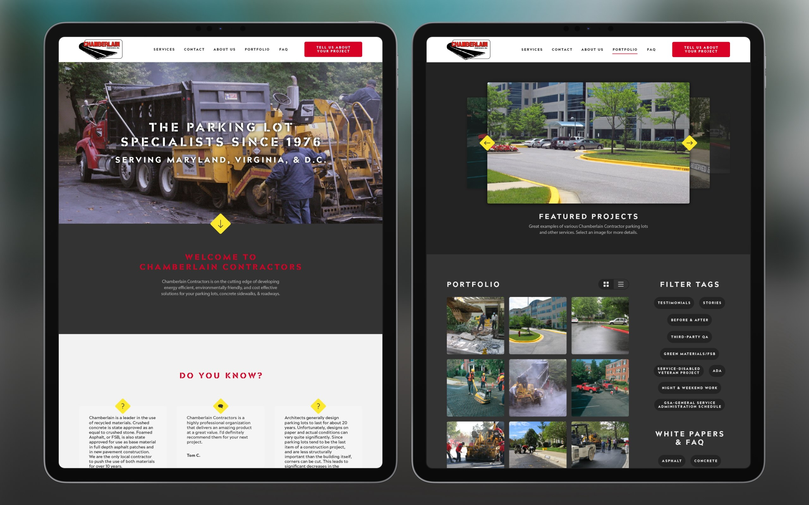
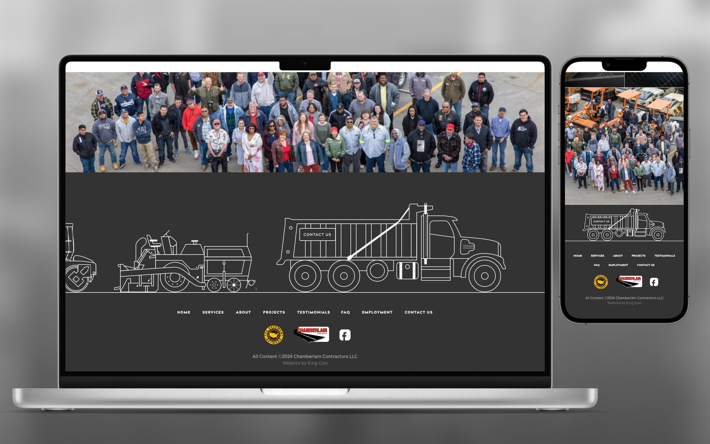

Logo and website for an Environment Paving Organization
Global Emmissionairy is an organization that promotes the use of recycled materials and sustainable installation within the pavement industry.
Client: Global Emissionairy
Agency: King Cow Interactive

Home page

Home page
Website for Chamberlain Contractors
Chamberlain Contractors is a Maryland-based paving service that specializes in commercial parking lots. They are a sister company of Global Emmisionairy and utilize renewable resources and sustainable practices.
Client: Chamberlain Contractors
Agency: King Cow Interactive

Home page

Home page